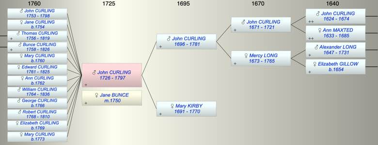

| [Index] |
| John CURLING (1726 - 1797) |
|  |
| b. 1726 at Barham |
| m. 15 Sep 1750 Jane BUNCE at St Mary Bredman, Canterbury |
| d. 11 Oct 1797 at Ash aged 71 |
| Parents: |
| John CURLING (1696 - 1781) |
| Mary KIRBY (1691 - 1770) |
| Siblings (6): |
| CURLING |
| Alexander CURLING (1717 - 1720) |
| Mary CURLING (1720 - 1721) |
| Elizabeth CURLING (1723 - ) |
| Kirby CURLING (1727 - 1797) |
| Hanna CURLING (1732 - ) |
| Grandchildren (4): |
| Thomas Oakley CURLING (1781 - 1825), Catherine CURLING (1783 - 1805), Henry CURLING, James Bunce CURLING (1800 - 1863) |
| Events in John CURLING (1726 - 1797)'s life | |||||
| Date | Age | Event | Place | Notes | Src |
| 1726 | John CURLING was born | Barham | Note 1 | ||
| 15 Sep 1750 | 24 | Married Jane BUNCE | St Mary Bredman, Canterbury | ||
| 1753 | 27 | Birth of son John CURLING | |||
| 1754 | 28 | Birth of daughter Jane CURLING | |||
| 1756 | 30 | Birth of son Thomas CURLING | |||
| 1758 | 32 | Birth of son Bunce CURLING | |||
| 1760 | 34 | Birth of daughter Mary CURLING | |||
| 1761 | 35 | Birth of daughter Edward CURLING | |||
| 1762 | 36 | Birth of daughter Ann CURLING | |||
| 1764 | 38 | Birth of son William CURLING | |||
| 1766 | 40 | Birth of son George CURLING | |||
| 1768 | 42 | Birth of son Robert CURLING | |||
| 1769 | 43 | Birth of daughter Elizabeth CURLING | |||
| 29 Jul 1770 | 44 | Death of mother Mary KIRBY (aged 79) | Barham | aged 78 ex MI at Barham | |
| 1773 | 47 | Birth of daughter Mary CURLING | |||
| 1781 | 55 | Death of father John CURLING (aged 85) | Barham | Note 2 | |
| 11 Oct 1797 | 71 | John CURLING died | Ash | Note 3 | |
| Created on a Mac™ using iFamily for Mac™ on 8 Oct 2023 |